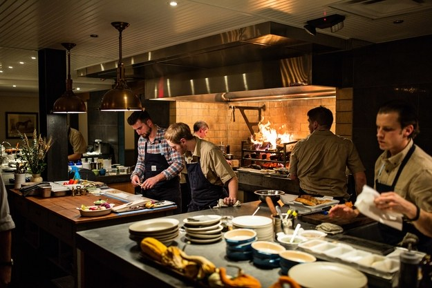
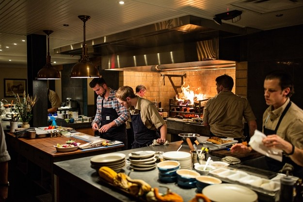
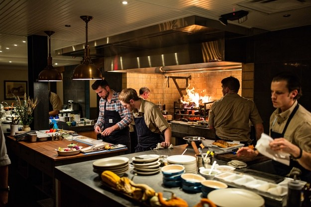

Picerija "Pizza Love" | Inđija - otmena i ugledna inđijska picerija sa 22 godine (od 1995. godine) dugom tradicijom u pripremanju pica. Od osnivanja, pa do danas, receptura pripremanja pica ostala je ista: ručno pripremano i razvlačeno sveže testo i namirnice peku se isključivo na bukovim drvima. Pice se pripremaju u tri veličine:
normalna (32cm), mega (42cm) i porodična (50cm).
Osim specijaliteta internacionalne kuhinje, gosti mogu uživati i u odlično pripremljenim domaćim jelima. Celokupna ponuda restorana dostupna je i u vašim domovima.
Dostava jela je besplatna i vrši se na području cele Inđije.
Ako želite neponovljiv ukus, kvalitet i pravo oduševljenje pri prvom zalogaju i sve to po pristupačnim cenama, probajte naše proizvode i posetite nas!
